Protocolos de Tomografía Computada (TC)
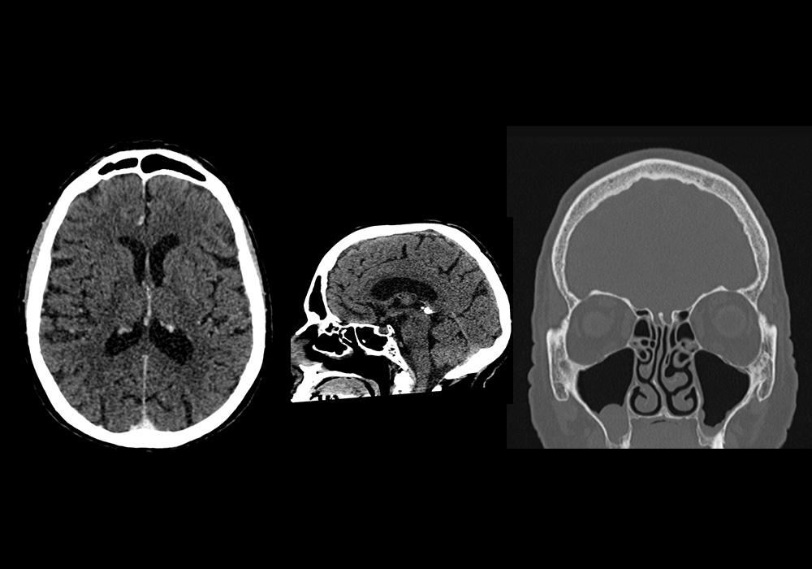
TC de Cerebro y Cabeza (Órbitas, Silla Turca, APC)
Estudio de encéfalo, órbitas y fosa posterior. Inclinación de mentón para perpendicularidad de LOM y evitar artefactos dentarios. Ayuno de 6 hrs para contraste e.v.
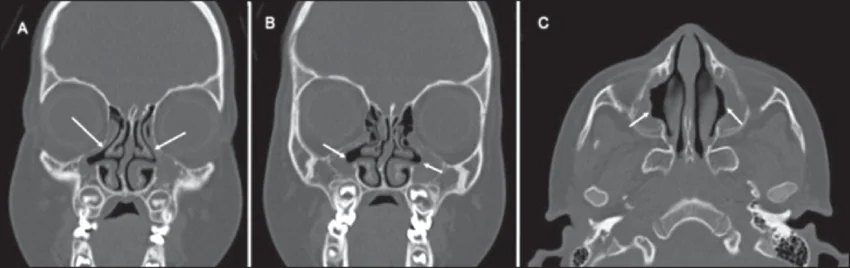
TC de Cavidades Perinasales (CPN)
Estudio óseo de alta resolución sin contraste e.v. Evaluación de senos maxilares, frontales, etmoidales, esfenoidales y complejo osteomeatal.
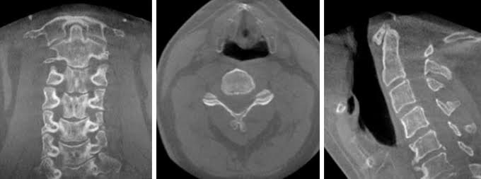
TC de Columna Cervical
Adquisición volumétrica desde C0 a T1. Posición supina, vía venosa 20G en caso de estudio contrastado (tumores o posoperado < 1 año).
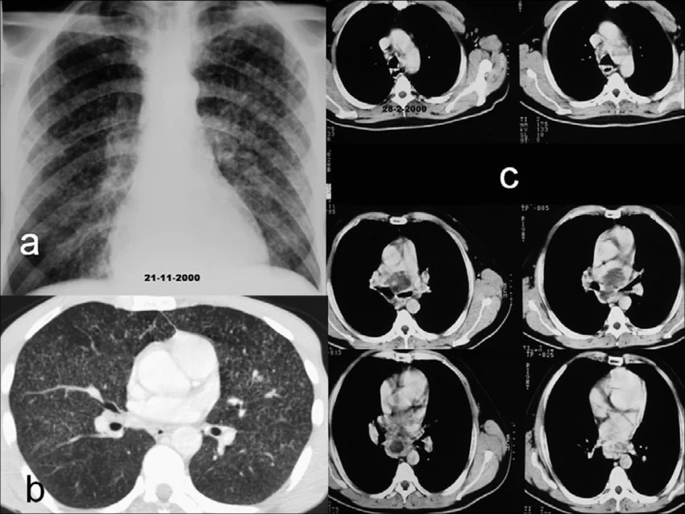
TC de Tórax (Simple / Contrastado)
Evaluación de parénquima pulmonar, mediastino y pleura desde opérculo torácico hasta recesos costofrénicos. Apnea inspiratoria estricta.
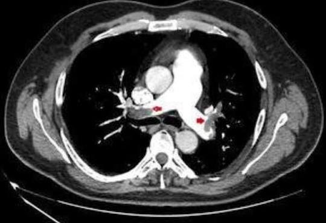
AngioTC de Tórax (Protocolo TEP)
Estudio vascular de urgencia para descartar Tromboembolismo Pulmonar. Uso de vía venosa 18G, alto caudal (4 - 5 ml/s) y técnica Bolus Tracking en tronco pulmonar.
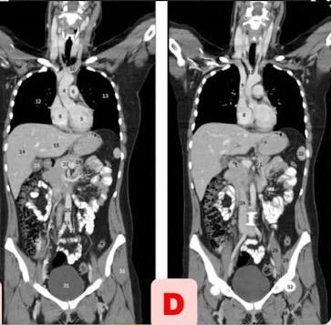
TC de Tórax, Abdomen y Pelvis (TAP)
Estudio oncológico y de estadificación integral desde ápices pulmonares hasta sínfisis púbica. Contraste oral neutro (agua) y contraste e.v. en fase venosa portal.
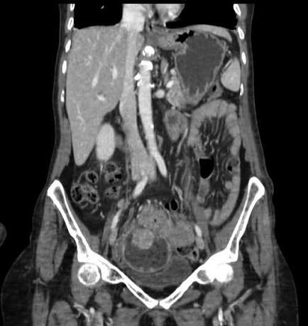
TC de Abdomen y Pelvis (Rutina / Trifásico)
Exploración desde cúpulas diafragmáticas a piso pelviano. Protocolo de hidratación oral (1.5L de agua previa). Fases: Basal, Arterial, Venosa y Tardía.
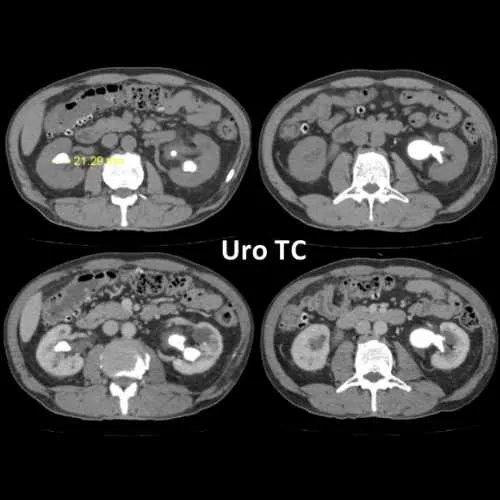
Pielotac (Protocolo para Litiasis Renal)
Estudio específico sin contraste e.v. Posición en DECÚBITO PRONO con la cabeza hacia el Gantry. 1L de agua 1 hora antes y retención urinaria (vejiga llena).
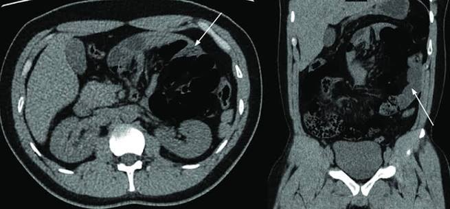
UroTAC (Urografía por Tomografía Computada)
Evaluación completa de parénquima renal, uréteres y vejiga (hematuria, tumores uroteliales). Incluye fase sin contraste, nefrográfica y excretora tardía (10-15 min).
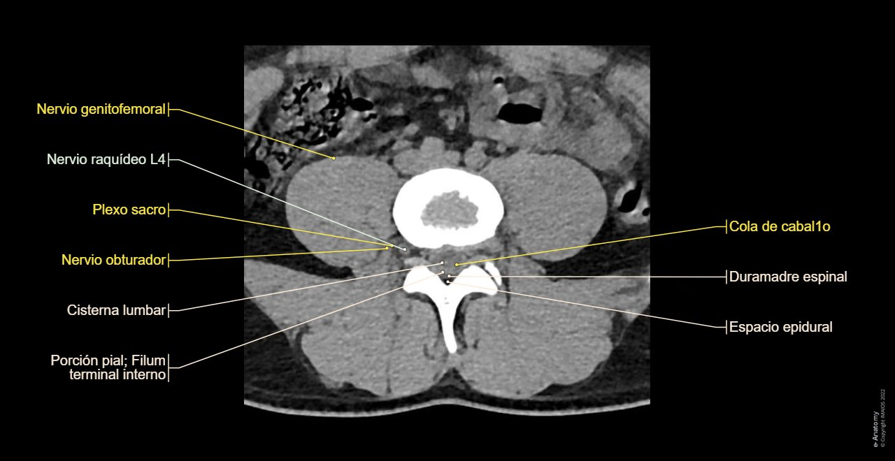
TC de Columna Lumbar (L1 - S1)
Estudio óseo y de canal raquídeo desde T12 hasta sacro. Decúbito supino con cojín bajo las rodillas para rectificar la lordosis lumbar.
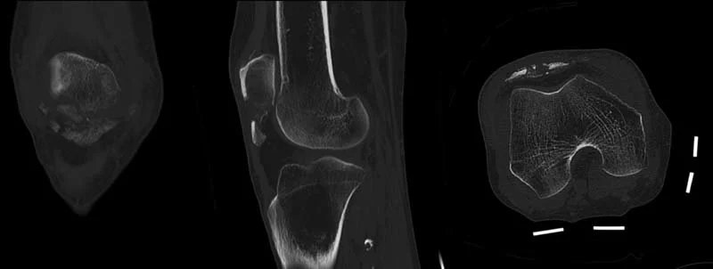
TC de Extremidades (Rodillas / Músculo-esquelético)
Evaluación de fracturas complejas, luxaciones y compromiso articular. Extremidades extendidas en decúbito supino con centrado sobre estructura de interés.